I'm Don Hopkins, and this is the Micropolis Online project.
I'll give you a quick history, and then try to get through the slides to the demo.
I started working on SimCity about 1992.
When I saw it at college before that, I just fell in love with it, and really wanted to figure out how it worked, and do stuff with the user interface and everything.
So when I had the chance to port SimCity to the Sun Workstation, I jumped at that, and made a version of it using the NeWS window system, James Gosling's PostScript based window system.
And then I developed an X11 version of SimCity, which was multi player. We sold that as a Unix product. Then the contract expired on that.
Later on I went on to Maxis to work on The Sims with Will Wright.
I dredged up this SimCity code, and we talked Electronic Arts into making it open source under the GPLv3 a few years ago.
The argument -- not the argument: actually they were very pleasant about it -- the thing that convinced them that it was a good idea was the One Laptop Per Child project.
Because the OLPC project is focused on "Constructionist Education", which is about children learning -- anyone learning, by building things.
And SimCity is pretty much the quintessential constructionist education game.
But it need to be opened up, so that it can be even better.
This OLPC project is based on Seymour Papert's ideas about teaching children to program, even when they're very young, and Alan Kay's ideas about the Dynabook and object oriented programming, and how kids learn.
And one of the important things about constructionism is kids helping each other, communicating and teaching each other.
I took the old X11 version, and I had made it multi player for X-Windows, but I simplified it and took that out for this. Now that runs on the OLPC.
What we really needed to do was to make a new version that had a much better user interface designed to take advantage of the things the OLPC can do.
Fortunately, the OLPC project chose to use Python as the official scripting language. Python is a powerful, easy to learn language, that is widely used in education.
But let me go on:
The goals: We want to make a fun game that's based on the original source code.
And "Constructionist Education" is a the overall theme, but it's very hard to figure out how that actually manifests itself in a game.
We're using free open source software, distributing it over the web, and running it on centralized servers.
We want to put in features to support collaboration, voting, teach democracy, and also teach language skills and interpersonal communication skills.
So far what I've done: First, we took the old TCL/Tk/X11 version, cleaned it up, got it through EA's Quality Assurance, and put it on the One Laptop Per Child.
Then we stripped down the code, translated it into C++, then cleaned it up, refactored it, and took out all the user interface. Then we started building a new user interface on top of that.
I had some really great help from some talented people. John Gilmore supported me for many years during the development of SimCity, and shepherded it through the complex legal process of relicensing it under GPLv3.
Albert Hofkamp is a software developer at the Eindhoven University of Technology. He helped me clean up this code, and put Doxygen documentation into it. Now the code is much sturdier and easier to do something with.
Tom Tjon A Loi is a an artist who's also helping on the project. I'll show you some ideas that we've put together about what direction it's going to go in the future.
And also we're benefiting from Kennisnet and IBM Netherlands, who are helping us make an educational version of this game.
The OLPC has been something for people to focus on, and get a bunch of people on board to make this happen. But we want Micropolis to run on as many different platforms as possible.
What's really wonderful is that I have had some really great conversations about this and encouragement from Alan Kay, who has been trying to do this stuff for years with kids.
Alan Kay's criticism of SimCity is that you can't see inside of it and understand what it's doing, and you have to accept it as a black box. So now I'm trying to solve that problems.
We're using a whole bunch of Free and open source software, building on top of it, and then making new software that's open source.
One of the things that the OLPC project wants game developers to do is to make games out of modular components that can be plugged together to make other games.
So I've been separating out the tile engine of SimCity, and the sprites, and the sound, and trying to make those work for other things.
The architecture of the web version is that there's a C++ game. And I'm using SWIG, a tool for making wrappers for libraries, and plugging them into extension language. And it lets you get your library to a whole bunch of different extension languages. So right now it's Python, but it could be Lua or Java or whatever.
There's another layer, which is gluing the game into Python. And the nice thing about SWIG, is that you can subclass your C++ classes in Python, and then just script everything in a nice language.
It's all open source stuff.
The web server does HTTP and it does Adobe AMF, which is kind of like binary JSON for Flash.
Now I'm doing the client in another open source scripting language called OpenLaszlo. It's like JavaScript and XML that gets compiled into Flash. But it will also compile into generic DHTML.
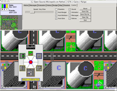Right now I'm concentrating on just getting the Flash interface working, and once the paint's dry on that, I can then do the parts that were Flash specific using the Canvas and DHTML and things.
The intention is to get it independent of Flash, but Flash is the fastest way to get it working first.
The other thing I have is a Python scripted GTK based user interface, for the desktop.
Another important thing is internationalizing it and taking all the strings out. I would love to have volunteers to help translate it to other languages. I made a little web based tool to do that. We're doing this for the Dutch educational system, with Kennisnet's support.
Previously I made a multi player version of this for X11. But X11 doesn't scale very well, and it was kind of an experiment.
But it did test out some ideas of making it a collaborative, cooperative game, instead of a competitive game.
I didn't want to mess up the game, but I wanted to layer another social game on top of it.
We're all sharing the same money, we're trying to achieve the same goals, so if somebody does something that pisses you off, you're going to be mad at them, and won't play with them. That will play out at a higher level than the game.
It's got voting for expensive things, like making a nuclear power plant, or changing the taxes. And the non-expensive things are just a free-for-all.
I want to re-visit the multi player game, but first get a really solid base to build it on top of. So doing a web based game is the best way to do that.
I'm adding stuff, like integrating it with MediaWiki.
One of the important things about Constructionist Education is getting people to help each other out, and chat.
I want to teach language skills with this. Not just how to be a good mayor. That's not the goal. It's how to write about what you want to do, and convince other people to vote for it.
I think it's going to be nice to embed this in things like Facebook and MediaWiki, because what you're doing is writing stories and newspapers, and blogging.
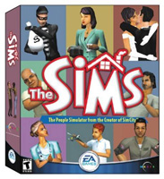The Sims 1 (and later versions) had something called The Sims Exchange, where when you save your game file, it also writes out a bunch of web files, that describe your house, your family, the story you've told about them with pictures. And then it uploads that to the web.
So really, playing the game is a web publishing tool. I want to apply those ideas to SimCity, and that would be in the form of a newspaper. So you could act as a journalist when something happened.
These events in the game are generating opportunities for you to click on it, open it up, and write about what your interpretation of it is. And then automatically push it into a wiki page or a blog.
So the result of playing a game will be this rich save file that has points of interest with stories attached to them. You could look at it geographically as a map, to see all the points of interest. You could look at it as a calendar, like a blog. And then all these things that happened with the story can link to a save file, so you can then jump back into the game at that point.
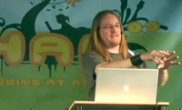I want to make sort of like TiVo for SimCity, is the eventual goal. You have all these save file snapshots, and then you can fast forward and reverse by replaying the edits that you did.
You can imagine that when you play game, at any point, if you decide "let's raise taxes", you could make a checkpoint there. And then you could revisit that decision, and then branch reality out to another thing, if you didn't raise taxes.
I want players to be able to make a tree of possibilities, and then share all these save files, and then comment on them, and write about them.
That's where the educational stuff comes in. The teacher should be able to write scenarios that plug into the game, that generate events, and give people things to discuss.
Alan Kay said some really wonderful things about the project to bring open source SimCity to the OLPC:
"One of the most wonderful possibilities about this venture is that it will bring together very fluent designers from many worlds of computing (more worlds than usually combine to make a game) in the service of the children. We should really try to pull this off!" -Alan Kay
I'm looking for volunteers. I never thought I'd be working directly or indirectly with Alan Kay, so it just blew my mind that he was interested in it. And he's very supportive.
Here's the long term goal: There's a game, and there's a robot or a monster. You double click on a monster, and it should open up a window that has a visual program that controls how it behaves.
This has already been done in the 80's on the Apple ][, and it was a game called Robot Odyssey, by Warren Robinett, who made Atari Adventure. And it was so before its time. It turns out that it is one of Alan Kay's favorite games, and that he's waiting for the other shoe to drop.
Robot Odyssey taught visual programming and logic to kids. You go inside a robot, and it's a room, with plugs and sensors, and you have logic parts that you can bring out, and make a circuit inside that robot.
What I'm trying to do -- oh I'd better get to the demo -- is do this within SimCity. And with a visual programming language that's just a layer on top of Python. We already have Python. I like Python. It's well designed. I'm not going to try to invent something different, I just want to give you a visual way to get to anything.
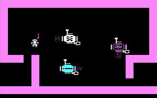 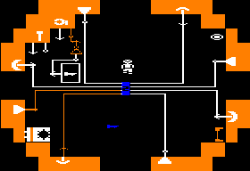How does Constructionist Education manifest itself in something like SimCity?
Creative writing, blogging, twittering and chatting: and all this social stuff that people do.
Democracy. Writing proposals. Trying to get somebody to support your proposal. Publishing things into wikis.
Opening it up to enable plugin programming. The first step is to look at the code to see how it works. And then tweak it and change it, and then make your whole new thing.
The older kids I want to teach Python and C++ programming.
And then younger kids will have this easier, higher level language to do logic.
This is version three. I'm only at version one right now.
I have the web server running. I want to put in sharing a city, tagging, journals, discussions, you know, the whole social net thing. It occurs to me that maybe I should just let Facebook handle a lot of that stuff. I'll just make a Facebook application.
Slow the game down a lot, so on your Facebook page it will let your friends vote on things. I'm getting ahead of myself.
MediaWiki integration. Take well known things that solve a problem well, and piggy back on top of them, instead of trying to invent your own things.
PayPay, so we can pay for all the CPU time it takes.
Tom Tjon A Loi made these mock-ups of what SimCity could look like inside a social network.
The important thing is that you have to have an identity. It knows about you.
You've got friends, and this could be a Facebook app. If you add the app, you can do all this stuff and play it yourself. But even if you don't add the app, you can still what other people are doing.
It's all about having people see what you're doing, and explaining it to them.
You can have these links into the save files, and people saying things. I want to make it so one game might last a week, and take little steps.
What I have already made to prove the concept of plugins, is plugin zones. The first plugin zone I made was a plugin church, because that's controversial and will upset people.
The idea is that I want to be able to script churches in Python. The other plugin is a plugin character.
In a multiplayer game, there could be several people in the same game, and you're on the map in a place, and you can chat embedded in the game, with collaborative editing.
If you put something down, it would put an interface that says: "Hey, somebody wants to make this. Do you vote for it? Yes or no." And then have a chat associated with that.
And then imagine other people could come into you game, and find: "Hey this zone is not developed. We're going to put a coffeeshop here!"
I want it eventually to be open enough that other people can come in and effect your game. And of course you always have a save file.
There's a tool for doing translations.
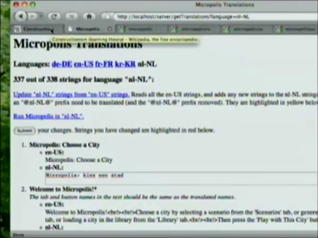
It's all in
Google Code
.
Ah, that's the robot! I wanted to . This is how PacMan works. He follows the road.
So I wrote a plugin robot that you can put into the thing.
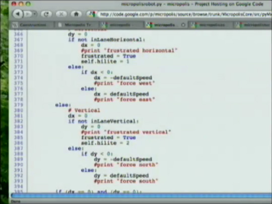I'd better get to the actual code that's running.
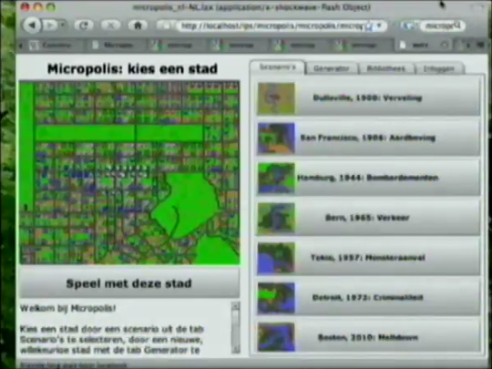These are the different scenarios, we could load, or generate something randomly. Here, we'll do one of my favorite cities here. I made this city.
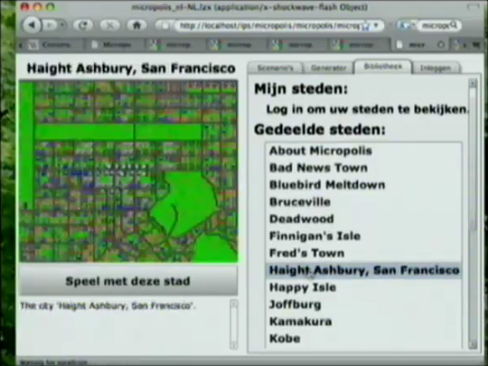This is a neat kind of a lazy tile view. There are 120 by 100 tiles on the server, and we're telling the server where we're looking at. And it's sending just the tiles that we need to see.
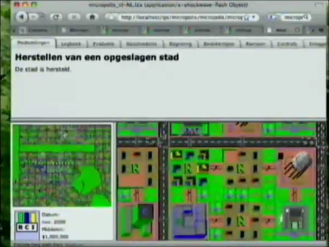Things that happen in the city get logged, and there's a chat.
This will help you figure out what you need to do to improve you city.
This is a history.
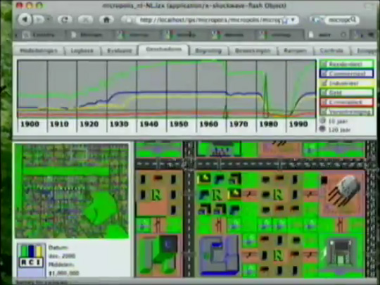Here's the nice one here: we can raise taxes a lot. It was so funny because the taxes in the Netherlands are so much more than 20%.
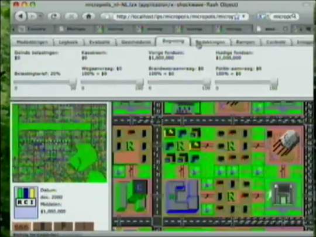We can look at the population density map overlay.
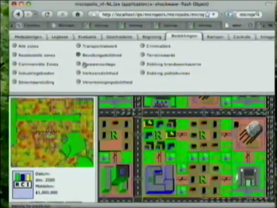Ok, now here's a meltdown. And when you get a meltdown, the notice window says "Hey there's a meltdown!", and has a live view showing it, that you can click on to go there.
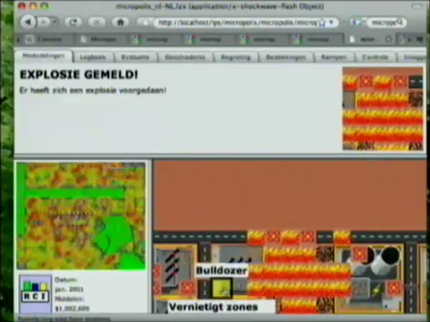Now this little window up here, when something interesting happens in the game, will show you a live view, and tell you something. But we can also have a link to Wikipedia or whatever.
I want to put in more educational stuff. Like the church says "Hey, did you know that Scientologists believe this?" and "Click here for more!". We can think of the churches as in-game advertising.
And then if you have too many churches, you use the bulldozer to get rid of the.
There's a speed control. I can make it go super-duper fast. And everybody just left. This is more like a twitch game.
Let me do the cheat. Ok, what is it? I just added this, so I'm not quite sure. You go "!faith 1000". That makes them want a lot more churches. Woah! Ok, so I'm getting churches.
I've only done one church, besides the generic one. So they just have little numbers. And I'm going to have a "Tax the Churches" option, too. Those are weird generic churches. If I lower the taxes, then more people will come in, and the churches will recruit them.
Oh, I ran out of money. Let me do the robots real quick. So this is PacMan. You can put him down. Oh, I'm out of money! The fastest way is to just refresh the screen, and start fresh.
We'll go straight in, we'll get rid of this. Oh, pie menus, right! If you click... (Dutch "Taartmenu" cursor pops up!) I've got to have a talk with my translator.
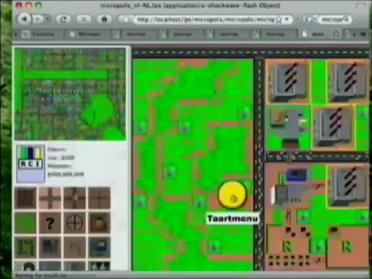You click, and you get a pie menu, which has items around the cursor in different directions. So if you click and go right, you get a road. And then you can do a little road. And if you click and go up and right, you get a bulldozer.
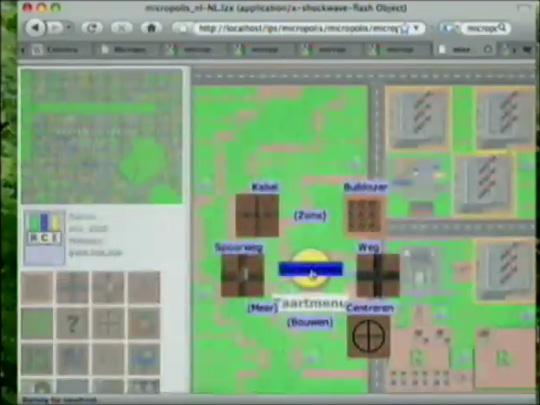And then there are submenus for zoning parks, and stuff like that. This gives you a nice quick gesture interface.
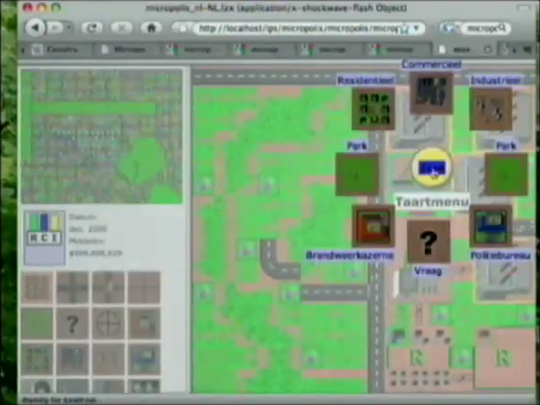The one I wanted was PacBot. So if you click him, that's running Python code that is looking at the map, and is looks for the traffic, and it goes up, up, up, up, up. See?
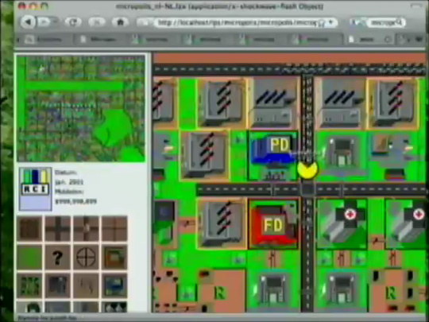Wait, you haven't -- hang on, wait: you can have lots of them. And then they compete. You get this wonderful emergent behavior of PacMan looking for traffic, and then the other PacMan eats it. You really need to zoom this up a little bit.
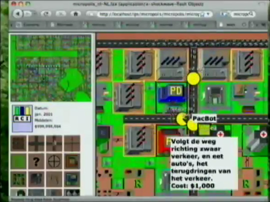The great thing about this: this is another game layered on top. You can make your PacMan maze, and then you can torture them. They'll go crazy, it's like a lion in his cage here. Ah, caught one! Ah! He's blue. Let's get him here. He's not going to be happy about this. Where'd he go? Oh oh, there's a menu to get rid of him, so I think I deleted him. Here, we'll put one there. He's just going nuts there.
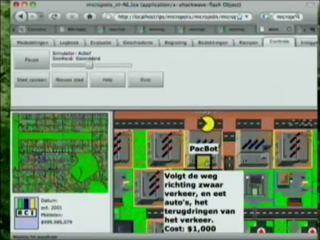Wait, where were we? Real quick. Where's my iPhone? Did I leave the phone down here? You can't see it so you'll have to believe me.
The first multi-player interface I'm making is an iPhone app, so it loads the city, and it lets you zoom and run over it. And I'm just about to hook it up to the server, so you can come into the game as a helicopter, and just tilt to run around, and then just chat.
Eventually I want to do the whole game on the iPhone, Andriod and whatever else. The first step is to just get presence and chatting in there.
One interesting thing: This is GPLv3. So you can't put it on the iPhone on purpose, because of the anti-TiVoization clause. But it's ok though to have it running on the server. And I think it's more interesting to have it running on the server, and anyway there's already a SimCity that runs on the iPhone.
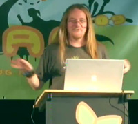Any questions?
Q: What's the cheat code to get money?
Mike: War!
Don: That's what churches are for.
I encourage you to script your own church and plug it in. I'm totally going to have the Flying Spaghetti Monster, and he's going to actually convert all the other churches to Flying Spaghetti Monster churches, so it will be a moot point, and there will be no war.
Announcer: Please thank Mr. Hopkins for his nice solution to the traffic problem.
You can now play Micropolis on Facebook!
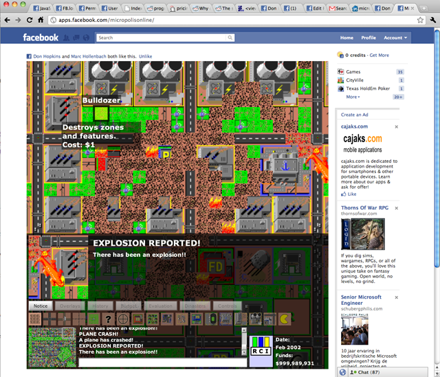